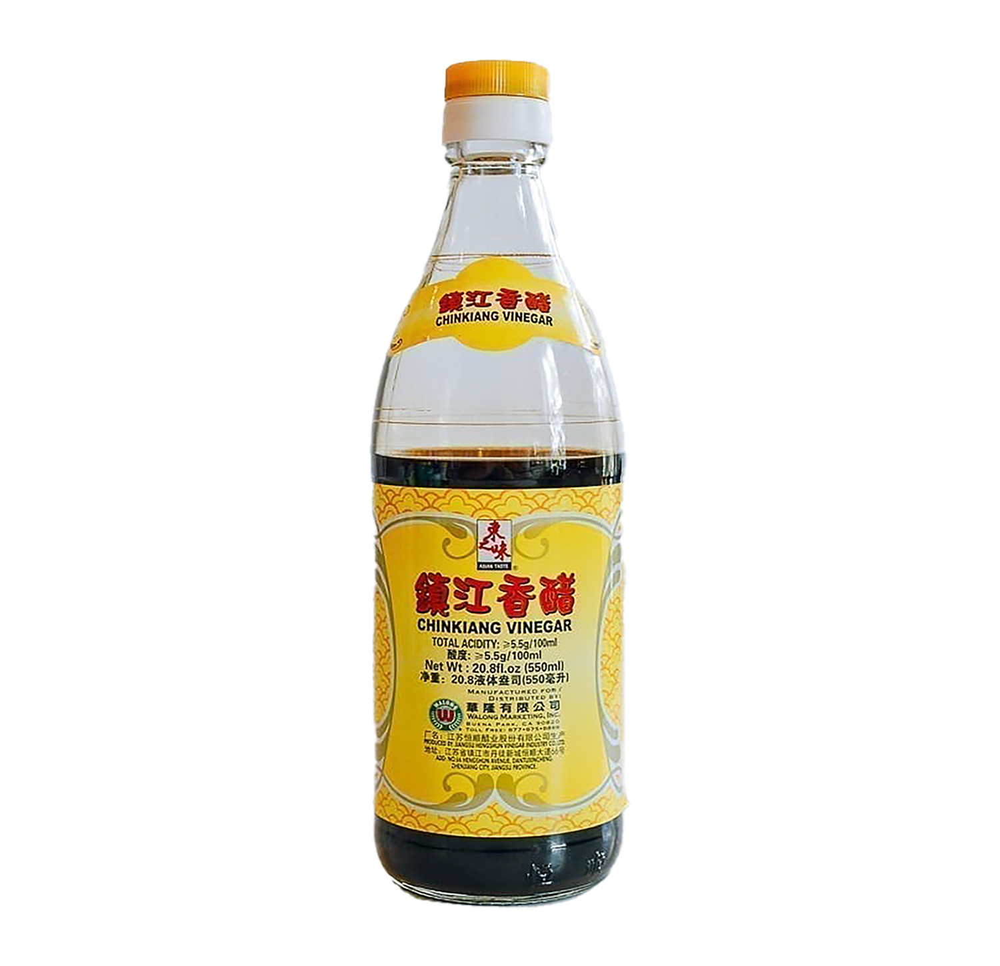

rice vinegar
A japanese vinegar that is on the lighter and sweeter side. Usually used for sushi rice, dressings, and marinades.

zhenjiang vinegar
Made in Zhenjiang in southern China. Uses sticky rice and is staple to be used in anything from a dipping sauce to a soup.
black vinegar
Technically the same as the previous one as it is also a black vinegar, but is made in Taiwan and is a family choice for me. Choosing between each brand comes down to preference or what your parents have used when your grew up. Think of it like using Raos or Carbone for pasta.